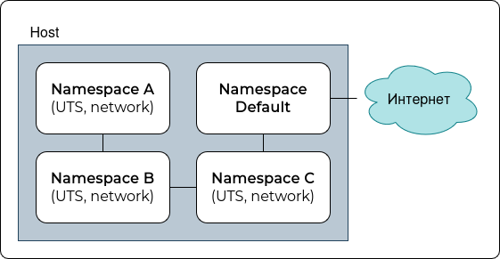

Linux namespaces
Может быть полезным
- Глубокое погружение в Linux namespaces (все части с теорией)
- Кунг-фу стиля Linux: делиться — это плохо
- Mount namespaces
- Using network namespaces and a virtual switch to isolate servers
- Зачем рассказывать про контейнеризацию в 2023 году
- Проблема в Docker с изменением времени
- lxs-unshare
- lxc-create
- lxc.container.conf
- man unshare, nsenter
- man {uts, user, pid, mount, uts, network, cgroup}_namespaces(7)
Обозначения
$$- PID текущего процесса.default#- выполнение команды внутри default namespacenew#- выполнение команды внутри нового соответствующего namespace
Пространства имен в Linux
Это механизм, позволяющий изолировать ресурсы между разными процессами.
Основные пространства имен, доступные в Linux:
-
Mount namespace. Изолирует файловую систему, позволяя процессам иметь разные точки монтирования.
-
Process namespace. Изолирует идентификаторы процессов (PID), позволяя процессам с одинаковыми PID существовать в разных пространствах имен. Часто интересует процесс с PID = 1, являющийся init-процессом в namespace.
-
Network namespace. Изолирует сетевые интерфейсы, маршруты и IP-адреса, позволяя иметь свои собственные сетевые конфигурации.
-
User namespace. Изолирует пользователей и группы, позволяя процессам иметь разные UID и GID.
-
IPC namespace. Изолирует межпроцессное взаимодействие. В данной статье не рассматривается.
-
UTS namespace. Изолирует имя хоста и доменное имя.
-
Time namespace. Позволяет процессам использовать разные время и временнЫе зоны.
-
Cgroup namespace. Позволяет изолировать группы контроля (cgroups), которые позволяют управлять ресурсами, выделенные для процессов. Например, количество CPU, RAM.
unshare
Команда unshare может использоваться для создания изолированных пространств имен для процессов.
В данной статье в качестве оболочки будет фигурировать zsh. У многих это будет sh или bash.
Далее примеры не зависят друг от друга.
Пример 1
echo $$
ps --forest
---
47342
PID TTY TIME CMD
47342 pts/1 00:00:00 zsh
47446 pts/1 00:00:00 \_ ps
Пример 2
echo $$
unshare
echo $$
ps --forest
echo $$
exit
---
47342
47621
PID TTY TIME CMD
47342 pts/1 00:00:00 zsh
47621 pts/1 00:00:00 \_ zsh
47959 pts/1 00:00:00 \_ ps
47342
Вложенные процессы видят родительские, т.к. у них общее пространство имен (по умолчанию), если не указывать ключи команде unshare.
Пример 3
echo $$
unshare
unshare
echo $$
ps --forest
exit
exit
---
47342
48558
PID TTY TIME CMD
47342 pts/1 00:00:00 zsh
47621 pts/1 00:00:01 \_ zsh
48558 pts/1 00:00:00 \_ zsh
48617 pts/1 00:00:00 \_ ps
Если вместо unshare выполнять команду *sh, то результат будет аналогичным.
Можно проследить, как увеличивается вложенность процессов, и родительские PID не изменяются.
Для всех процессов *sh из дерева namespaces в каталоге /proc/$$/ns/ будут одинаковые. Это означает, что процессы выполняются в одних и тех же namespaces, т.е. результаты одних и тех команд будут одинаковые в большинстве случаев (если не учитывать специфичные команды, например, завязанные на случайности).
ls -la /proc/$$/ns/
---
... cgroup -> cgroup:[4026531835]
... ipc -> ipc:[4026531839]
... mnt -> mnt:[4026531841]
... net -> net:[4026531840]
... pid -> pid:[4026531836]
... pid_for_children -> pid:[4026531836]
... time -> time:[4026531834]
... time_for_children -> time:[4026531834]
... user -> user:[4026531837]
... uts -> uts:[4026531838]
Проанализировать результат вывода следующих команд:
echo $$
ls -la /proc/$$/ns/
unshare
echo $$
ls -la /proc/$$/ns/
unshare
echo $$
ls -la /proc/$$/ns/
exit
exit
UTS namespace
Используется для изоляции имени хоста и домена.
Пример 1 - unshare
В данном примере у всех процессов одинаковый UTS namespace, поскольку unshare вызывается без ключа -u, который отвечает за создание нового UTS namespace для нового процесса.
default# hostname
debian
default# unshare
new# hostname
debian
new# hostname centos
new# hostname
centos
new# exit
default# hostname
centos
По итогу имя устройства в основном пространстве имен тоже изменилось.
Пример 2 - unshare -u
В данном примере у двух процессов отличается UTS namespace, т.к. unshare вызывается с ключом -u.
default# echo $$
55456
default# ps --forest
PID TTY TIME CMD
55456 pts/1 00:00:00 zsh
55710 pts/1 00:00:00 \_ ps
default# ls -la /proc/$$/ns/
... uts -> uts:[4026531838]
default# unshare -u
new# ls -la /proc/$$/ns/
... uts -> 'uts:[4026533759]'
new# echo $$
55825
new# ps --forest
PID TTY TIME CMD
55824 pts/3 00:00:00 sudo
55825 pts/3 00:00:00 \_ bash
55927 pts/3 00:00:00 \_ ps
Это значит, что два разных процесса, у которых отличается UTS namespace, могут иметь разные hostname и domain name. По умолчанию hostname выведет одинаковый результат, но его можно изменить.
default# hostname
debian
default# unshare -u
new# hostname
debian
new# hostname centos
new# hostname
centos
new# exit
default# hostname
debian
nsenter
Если в пространстве имен нет ни одного активного процесса, то namespace пропадает. Чтобы сохранить namespace, необходимо указать файл в параметрах команды unshare. Далее, можно выйти из namespace, а позже вернуться с помощью nsenter. Подключиться в любой namespace можно в любой момент, зная имя файла или PID процесса, namespace которого интересует.
Пример 1
default# hostname
debian
default# touch /tmp/centos
default# unshare --uts=/tmp/centos
new# hostname
debian
new# hostname centos
new# hostname
centos
new# exit
default# hostname
debian
default# nsenter --uts=/tmp/centos
new# hostname
centos
new# exit
hostname сохранился после выхода из namespace и последующего возврата в него.
Time namespace
Используется для изоляции параметров времени, таких как системное время или временнАя зона.
Пример 1 - unshare -t --boottime=<offset>
Данный пример из man показывает, что процесс в новом time namespace можно задать сдвиг по времени работы процесса внутри namespace.
default# uptime -p
4 hours
default# unshare --time --boottime=3600
new# uptime -p
5 hours
-p - pretty format.
Получилось, что процесс внутри нового time namespace считает, что он работают на час дольше.
Пример 2 - faketime
Есть предположения: раз и два, что в Docker не поддерживается полноценная изоляция time namespace, поэтому существует популярный инструмент для "подделки" времени внутри namespace. Можно установить пакет из репозитория, если он там есть.
В данном примере внутри namespace время сдвигается на 1 год назад. Существуют различные форматы, см. документацию.
default# date
default# apt update && apt install faketime
default# unshare --time
new# faketime --help
new# faketime -f '-1y' date
MNT namespace
Используется для изоляции точек монтирования, создания "ложной" файловой системы для вложенных процессов с ограниченным набором команд.
Пример 1
Существуют наборы утилит, необходимые для минимальной работы ОС.
default# mkdir -p /home/ilya/container/fakeroot
default# cd /home/ilya/container
default# wget https://dl-cdn.alpinelinux.org/alpine/v3.21/releases/x86_64/alpine-minirootfs-3.21.3-x86_64.tar.gz
default# tar xvf alpine-minirootfs-* -C fakeroot
default# useradd -M container-root
passwd (root)
default# chown container-root -R fakeroot
default# findmnt | grep fakeroot
default# su - container-root
default# unshare -Urm
new# mount -t tmpfs tmpfs /mnt
new# findmnt | grep mnt
new# cd fakeroot
new# mount --bind fakeroot fakeroot
mkdir old_root
pivot_root . old_root
# PATH=/bin:/sbin:$PATH
umount -l /old_root
ls -l /
В итоге получилась изолированная файловая система.
С помощью nsenter можно подключиться к созданному mount namespace:
new# echo $$
54321
default# nsenter -t 54321 -m /bin/sh
Здесь важно указать sh, т.к. внутри данного namespace в файловой системе отсутствует bash.
Если в каталоге fakeroot/home добавить файл, например, то при подключении к созданному mount namespace он там также отобразится.
PID namespace
Используется для изоляции процессов. Отсутствует возможность влиять на процессы вне текущего PID namespace. При создании нового процесса с изолированным PID namespace его PID = 1, что обычно означает, что процесс запущен самым первым - init.
Пример 1 - unshare -p
Обычно с ключом -p применяются также другие ключи - --fork и --mount-proc.
default# unshare --pid --fork --mount-proc
new# echo $$
1
new# ps
PID TTY TIME CMD
1 pts/6 00:00:00 bash
4 pts/6 00:00:00 ps
Использование ключа --mount-proc вносит небольшое удобство, т.к. без него пришлось бы выполнять следующие команды:
default# unshare --pid --fork --mount
new# mount -t proc proc /proc
new# echo $$
1
new# ps
PID TTY TIME CMD
1 pts/6 00:00:00 bash
4 pts/6 00:00:00 ps
User namespace
Используется для изоляции пользователей и групп. В таком случае процессы работают с различными правами, не затрагивая хост.
Пример 1 - unshare -U
Если выполнить такую команду, то в дочернем процессе с новым User namespace пользователь станет "никем" (nobody). Это поведение по умолчанию.
В следующих командах с помощью (х) указаны разные терминалы, в которых необходимо выполнять команду:
(1) default# unshare -U
(1) new# echo $$
54321
(1) new# whoami
nobody
(2) default# echo "0 1000 1" > /proc/54321/uid_map
(1) new# whoami
ilya
uid_map
Специальный файл /proc/$$/uid_map, в котором сопоставляются пользователи двух namespace, который является пустым при создании user namespace. Поэтому в примере 1 пользователь стал "никем" при переходе в новый namespace.
В данный файл можно записать строку вида <namespace_uid> <parent_uid> <count>, которая означает диапазон uid размером count, начиная с namespace_uid, и данный диапазон соотносится с другим диапазоном uid в родительском namespace, начиная с parent_uid. Звучит очень запутано (в man тоже запутано). На деле все просто.
Например, строка 0 1000 1 означает, что внутри namespace пользователь будет root (0), т.е. может делать все что хочет, но только внутри своего namespace, который на самом деле в родительском namespace является ilya (1000), а число 1 означает, что сопоставляется только один пользователь.
Пример 2 - unshare -U ...
В данном примере пользователи user и ilya должны существовать в namespace родительского процесса.
default# whoami
ilya
default# unshare -U --map-root-user
new# whoami
root
new# exit
default# unshare -U --map-current-user
или
(2) default# echo "1000 1000 1" > /proc/$PID/uid_map
new# whoami
ilya
new# exit
default# unshare -U --map-user=user
или
(2) default# echo "1001 1001 1" > /proc/$PID/uid_map
new# whoami
user
Аналогично необходимо работать с группами.
Network namespace (самое интересное для сетевого администратора)
Используется для создания изолированного пространства имен, в которой будут собственные сетевые интерфейсы, IP-адреса и маршруты.
Пример 1 - unshare
В данном примере запускается процесс в default namespace (unshare без ключей), в котором будут видны все сетевые интерфейсы основного namespace.
default# ip a
default# unshare
new# ip a
new# exit
Убедиться, что network namespace отличается, можно с помощью следующих команд:
default# echo $$
34797
default# ls -la /proc/$$/ns/
... net -> 'net:[4026531840]'
new# echo $$
34005
new# ls -la /proc/$$/ns/
... net -> 'net:[4026533159]'
Пример 2 - unshare --net
В данном примере запускается процесс в новом network namespace, в котором результаты выполнения команды ip a уже будут разные.
default# ip a
default# unshare --net
new# ip a
new# exit
В новом network namespace только один loopback-интерфейс, в отличие от default namespace.
Пример 3 - ip netns
Сетевые пространства можно создавать с помощью команды ip netns.
default# ip netns add netns1
Посмотреть список существующих netns:
default# ls /var/run/netns/
Выполнить команду внутри netns1:
default# ip netns exec netns1 <command>
default# ip netns exec netns1 ip a
Пример 4 - Изменение hostname с помощью ip netns
Если в default namespace и внутри netns1 посмотреть hostname, то результат будет одинаковый, т.к. UTS namespace одинаковый - default, отличается лишь network namespace:
default# hostname
debian
default# ip netns exec netns1 hostname
debian
Если теперь внутри netns1 изменить hostname, то он также изменится в default#, т.к. UTS namespace одинаковый:
default# ip netns exec netns1 hostnamectl set-hostname centos
default# ip netns exec netns1 hostname
centos
Пример 5 - ip netns exec new bash
С помощью команды ip можно создать процесс bash внутри нового netns. Откроется bash в новом network namespace, и можно выполнять обычные команды, которые будут учитывать наличие newns1.
default# hostname
debian
default# ip a
<все существующие интерфейсы>
default# ip netns exec new /bin/bash
new# hostname
debian
new# ip a
<только loopback>
new# exit
Пример 6 - Создание интерфейсов внутри netns
При создании нового network namespace в нем есть только loopback-интерфейс. Создать изнутри новые интерфейсы нельзя без прав рута, поэтому их нужно создать извне, а затем поместить в нужный namespace.
default# ip netns add new
default# ip link add lo1 type dummy
default# ip link set dummy netns new
default# ip netns exec new ip a
Помимо lo будет еще lo1. Далее управлять его состоянием можно из нового namespace.
default# ip netns exec new ip link set lo1 up
default# ip netns exec new /bin/bash
new# ip link set lo up
new# ip addr add 1.1.1.1/32 dev lo1
new# ping 127.0.0.1
new# ping 1.1.1.1
Пример 7 - Пара veth-интерфейсов
До сих пор из нового network namespace нельзя выйти сетевому трафику во внешний мир. Чтобы получить доступ из одного namespace в другой, необходимо создать пару виртуальных интерфейсов типа veth. Один интерфейс из пары поместить в новый network namespace, а второй оставить в default network namespace.
default# ip link add veth-default type veth peer name veth-new
default# ip a
default# ip netns add new
default# ip link set veth-new netns new
default# ip a
<Интерфейс veth-new пропадет>
default# ip addr add 10.0.0.1/30 dev veth-default
default# ip link set veth-default up
default# ip netns exec new /bin/bash
new# ip addr add 10.0.0.2/30 dev veth-new
new# ip link set veth-new up
new# ip a
<Будет lo и veth-new интерфейсы>
new# ping 10.0.0.1
new# ip route add default via 10.0.0.1
new# ping 8.8.8.8
<не работает из-за отсутствия NAT>
default# iptables -t nat -A POSTROUTING -s 10.0.0.0/30 -j MASQUERADE
default# ip netns exec new ping 8.8.8.8
<ping должен работать>
Подобным образом можно как угодно организовывать сетевую связность между разными network namespaces.
nsenter + контейнер Docker
С помощью nsenter можно выполнять команды внутри пространства имен контейнера, созданного с помощью Docker/Podman.
Создается и запускается контейнер:
docker run -it --rm debian:buster-slim /bin/bash
Поиск PID процесса, с которым связаны новые пространства имен:
lsns | grep bash
<Здесь найти PID>
Из default namespace выполнить команды с помощью nsenter внутри пространства имен контейнера, и желательно подключить все использованные в контейнере пространства имен, чтобы ничего не сломать.
Создать пользователя, изменить hostname:
nsenter -t $PID --uts --mount --pid --cgroup --net --ipc -- useradd user123 -M
nsenter -t $PID --uts --mount --pid --cgroup --net --ipc -- hostname docker123
В контейнере появится пользователь, который недоступен на хосте, а также в контейнере будет изменено имя.
cgroups
Используется для ограничения вычислительных ресурсов, например CPU, RAM.
Читать самостоятельно, например, здесь.
Linux Containers (LXC)
- Можно сказать, что данная технология позволяет проще создавать изолированные пространства имен для процессов, чем это делалось ранее.
- Это что-то среднее между работой напрямую с linux namespaces и Docker.
Установка
apt install lxc lxctl lxc-templates
Пример 1 - lxc-unshare -s UTSNAME
default# hostname
debian
default# lxc-unshare -s UTSNAME /bin/bash
new# hostname
debian
new# hostname centos
new# hostname
centos
new# exit
default# hostname
debian
Пример 2 - lxc-unshare -s NETWORK
default# hostname
debian
default# lxc-unshare -s NETWORK /bin/bash
new# ip -c a
1: lo: <LOOPBACK> mtu 65536 qdisc noop state DOWN group default qlen 1000
link/loopback 00:00:00:00:00:00 brd 00:00:00:00:00:00
new# hostname centos
new# hostname
centos
new# exit
default# hostname
centos
Создание и управление LXC-контейнерами
Посмотреть список доступных шаблонов:
ls /usr/share/lxc/templates/
Список загруженных шаблонов (корневых файловых систем по сути):
ls /var/cache/lxc/
Список созданных контейнеров:
lxc-ls
Информация о контейнере:
lxc-info -n <name>
Создать и удалить контейнер:
lxc-create -n lxc1 -t debian
lxc-destroy lxc1
Запустить контейнер:
lxc-start -d -n lxc1
Запустить процесс внутри контейнера (по умолчанию запускается shell):
lxc-attach -n lxc1
Пример
host# lxc-create -n deb1 -t debian
host# lxc-create -n deb2 -t debian
host# lxc-start deb1
host# lxc-start deb2
host# lxc-attach deb1
deb1# apt update && apt install iputils-ping -y
deb1# ping <deb2 IP>
С помощью nsenter можно выполнить команду внутри пространств имен lxc-контейнера:
host# lxc-info deb1
Name: deb1
State: RUNNING
PID: 83327
IP: 10.0.3.157
Link: vethM2P2bv
TX bytes: 1.22 KiB
RX bytes: 10.81 KiB
Total bytes: 12.03 KiB
host# lsns | grep 83327
4026533228 mnt 5 83327 root init
4026533346 uts 5 83327 root init
4026533462 ipc 5 83327 root init
4026533463 pid 5 83327 root init
4026533464 cgroup 5 83327 root init
4026533465 net 5 83327 root init
host# nsenter -t 83327 --all /bin/sh
deb1# ip a
deb1# ping ...
deb1# exit
Что еще можно изучить?
- LXD. Надстройка над LXC.
- OpenVZ. LXC и OpenVZ - два инструмента, по сути выполняющих одно и тоже.
- LXC внутри Proxmox, OpenNebula. Удобный графический инструмент для управления контейнерами LXC, если нужно быстро развернуть что-то простое.
🧠 Самостоятельная работа
Создать несколько процессов в разных namespaces (UTS, network) согласно схеме:

Доступ в Интернет из любого namespace должен осуществляться по пути, указанному на схеме.
Исходная сеть - 10.x.0.0/16. Делить на подсети при необходимости любым удобным способом.
Внутри namespace должно быть уникальное имя.